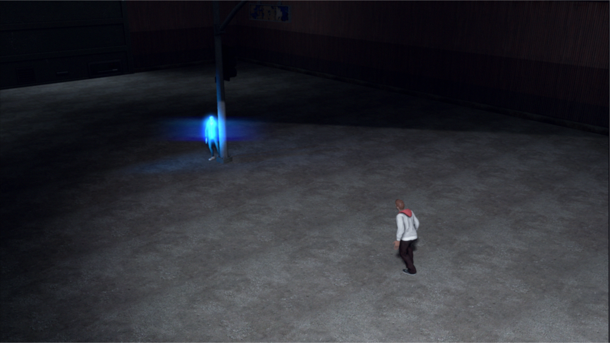
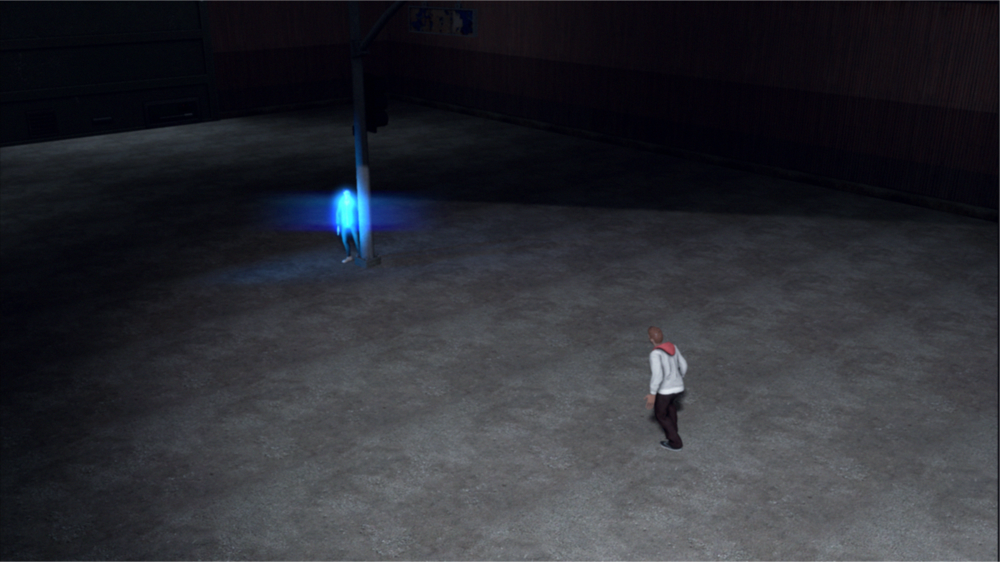

animation and video
telling narrative-based stories through movement and video
Animation and video holds a special place in my personal development as it introduced me to media production, and by extension, design. It was only through these initial projects in character animation and dynamics that I eventually moved on to further
explorations. Although now my interest is primarily focused on more interactive media and physical products, the ideas and processes I developed when making these projects still carry over to problem-solving approaches and breaking down complex
tasks.
Different projects shown below focused on different elements: utilizing specific techniques, crafting better narratives, and expanding on my animation skillset and workflow.
Different projects shown below focused on different elements: utilizing specific techniques, crafting better narratives, and expanding on my animation skillset and workflow.
process
.CITY was the kind of production I wanted to create from the very start of my journey into animation. I first started with the seed of an idea - in this case, it was a fascination with relentless cities and the CCTV visual aesthetic. This was later expanded
to include themes of paranoia, voyeurism, and perhaps most importantly, the nature of memory. I wanted to control each part of its creation, from its very origins as a purely conceptual narrative, to initial sketches and experiments, to actual animation,
before moving onto sound and editing. I took all of these ideas into account for the production of the video - through the lens of memory, background characters' movements look lifeless while others were exaggerated to larger-than-life personalities.
Technically this meant many hours of keyframing and using the cinematography to support the individual motions. Then, in post, this necessitated specific editing and other visual and auditory corrections to retain that same disjointed, fractured
quality that is present when recalling difficult memories.
 Through keyframing with multiple blocking passes for each individual scene, I was able to simplify the arduous task of animating the actors. Every step of this process, the choreography and character motions were all in service of the main concept I always
had in mind. In addition to characters, I also had to make sure to bring the virtual environment of an insomniac city to life - which required animating lights, objects, and other elements of the mise en scene.
Through keyframing with multiple blocking passes for each individual scene, I was able to simplify the arduous task of animating the actors. Every step of this process, the choreography and character motions were all in service of the main concept I always
had in mind. In addition to characters, I also had to make sure to bring the virtual environment of an insomniac city to life - which required animating lights, objects, and other elements of the mise en scene.
After the raw animation stage, the next step was taking the images and adding the right visual touches to them. This post-production stage included color correction and other adjustments through After Effects to produce the sterile feel of the video, compositing depth map images (like the one above) onto the raw images to allow for a more dynamic viewing experience, and editing through Premiere to achieve the desired fractured feel present throughout the video. For the music behind the project, I took my knowledge of Ableton Live and mixing audio to create a set featuring electronic songs by artists like Koreless, Jon Hopkins, and Floating Points that inspired me during the creation of the project.
Pracing Bull was looking to solidify my fundamentals and mechanics of animation as a medium, testing everything I had learned by that point with action choreography, an easily overlooked but intricate and challenging element. My admiration for stunt choreography and direction only grew during the course of this project. Ultimately I want to take dynamic, fluid movements and put them at the forefront of this project.
 A similar but more detailed and clearly defined process was taken here. First, I started off with planning a rough timeline and range of motions I wanted to re-create through animation, beginning with simple storyboards. I started off with reference footage
- either shot by myself or of clips found online. Then, I took multiple rounds of blocking in initial movements. Once those were set, I could express greater detail and fluidity through a series of further passes, focusing on smooth movements between
one action into another. Adjusting splines here was essential to getting the movements right. Finally, I had to animate the camera to give a dynamic view of the scene.
A similar but more detailed and clearly defined process was taken here. First, I started off with planning a rough timeline and range of motions I wanted to re-create through animation, beginning with simple storyboards. I started off with reference footage
- either shot by myself or of clips found online. Then, I took multiple rounds of blocking in initial movements. Once those were set, I could express greater detail and fluidity through a series of further passes, focusing on smooth movements between
one action into another. Adjusting splines here was essential to getting the movements right. Finally, I had to animate the camera to give a dynamic view of the scene.
I decided to gather all of my best animation projects spanning the past two years or so into a concise showreel. Although I originally planned to compile snippets of all the animation projects I had done, the end result was a bloated and less impactful experience where I need a quick, snappy overview of all of my different explorations. Instead, I highlighted key projects that were especially meaningful for my own growth.

After the raw animation stage, the next step was taking the images and adding the right visual touches to them. This post-production stage included color correction and other adjustments through After Effects to produce the sterile feel of the video, compositing depth map images (like the one above) onto the raw images to allow for a more dynamic viewing experience, and editing through Premiere to achieve the desired fractured feel present throughout the video. For the music behind the project, I took my knowledge of Ableton Live and mixing audio to create a set featuring electronic songs by artists like Koreless, Jon Hopkins, and Floating Points that inspired me during the creation of the project.
Pracing Bull was looking to solidify my fundamentals and mechanics of animation as a medium, testing everything I had learned by that point with action choreography, an easily overlooked but intricate and challenging element. My admiration for stunt choreography and direction only grew during the course of this project. Ultimately I want to take dynamic, fluid movements and put them at the forefront of this project.
I decided to gather all of my best animation projects spanning the past two years or so into a concise showreel. Although I originally planned to compile snippets of all the animation projects I had done, the end result was a bloated and less impactful experience where I need a quick, snappy overview of all of my different explorations. Instead, I highlighted key projects that were especially meaningful for my own growth.
gallery

 
